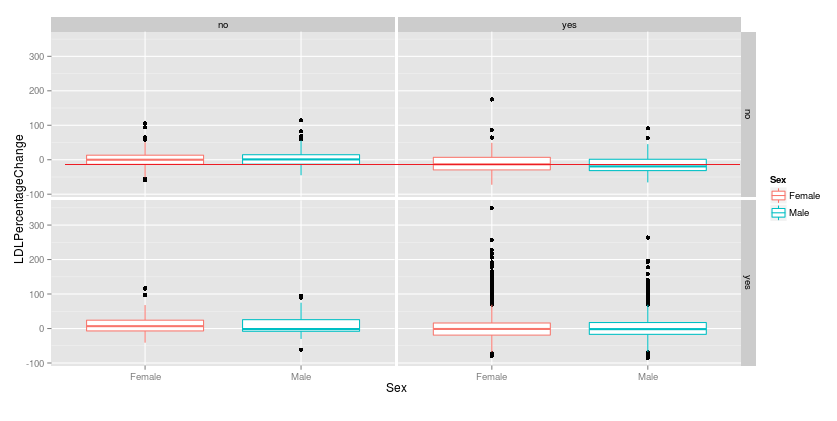

Shiny app for statin use Exploratory Analysis
ldl <- read.csv("ldl_change.csv",sep='|') (ldl[1,"LDL_Value2014"] - ldl[1,"LDL_Value2013"])
## [1] -4
((ldl[1,"LDL_Value2014"] - ldl[1,"LDL_Value2013"]) /ldl[1,"LDL_Value2013"])*100
## [1] -4.347826
Tool can be used to visualy see how patients that were not taking statins in 2013 but started taking them in 2014 have a negative change in LDL levels, so their cholesterol levels have decreased.

Next step would be to statistically prove it.